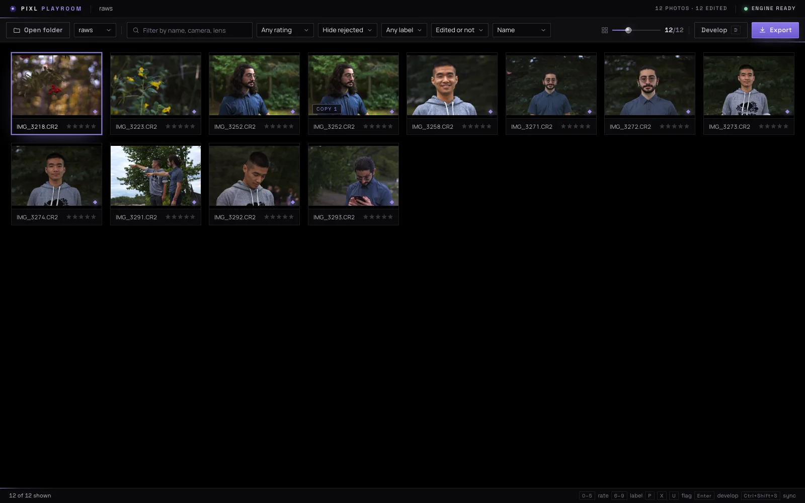
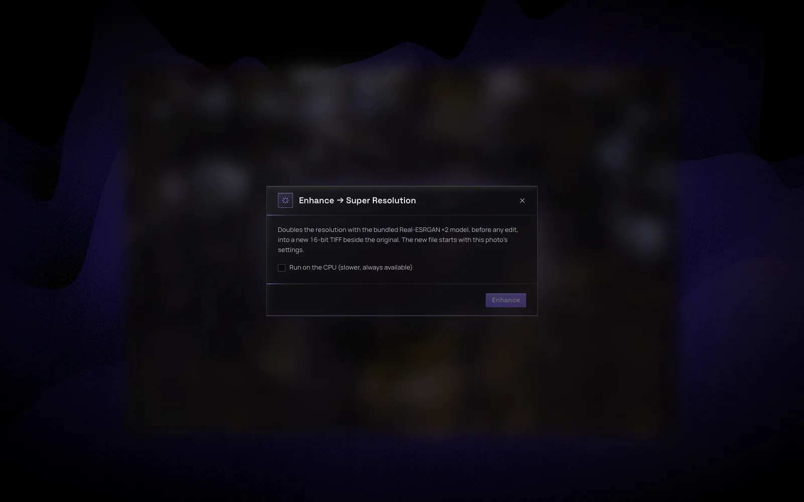
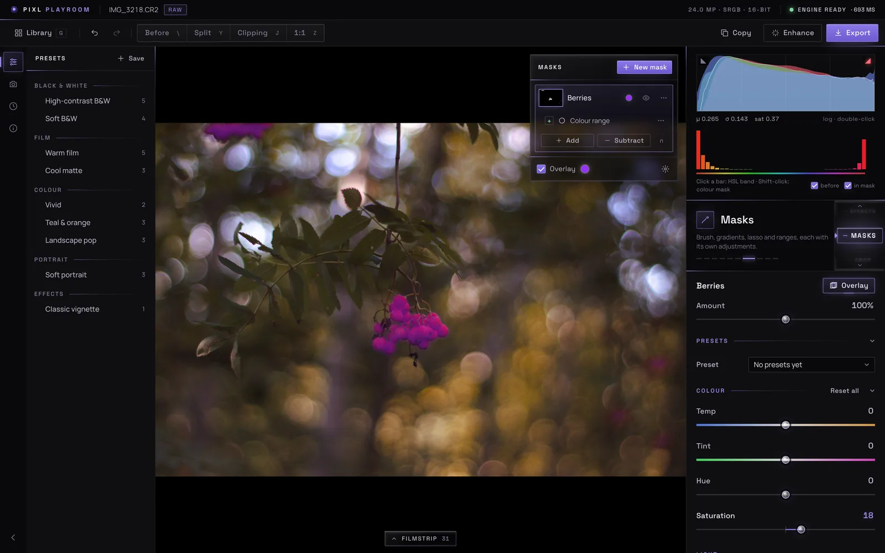
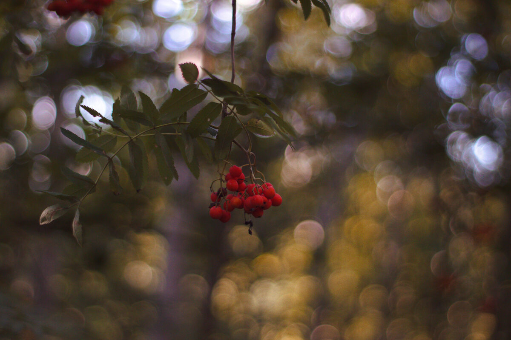
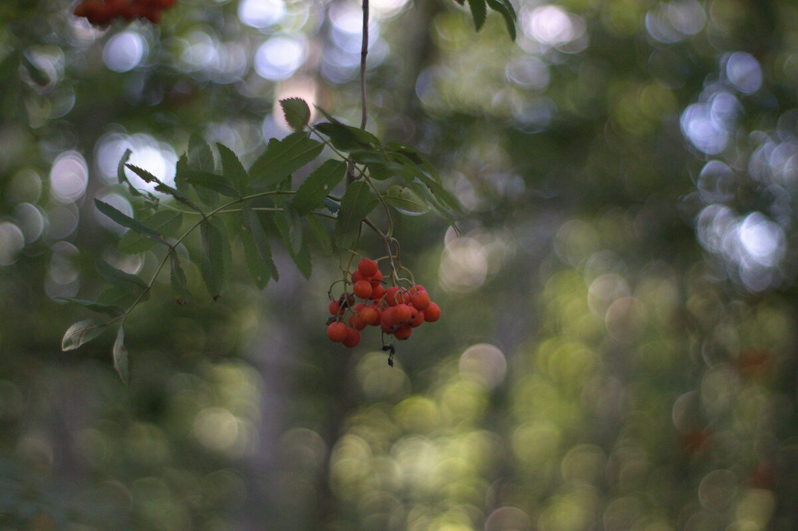

Develop everything.
Rent nothing.
The full professional toolset, working straight on your folders. It upscales on your own GPU and grades in layers you can stack. You pay once, and it's yours.
Follow along on GitHub.
- RAW
- DNG
- JPEG XL
- HEIC
- TIFF
No import.
No catalog.
Point Playroom at a folder and start. Your photos stay in the folders you already use, and your edits are saved as a recipe that stays with each photo.

Twice the pixels, on your own GPU.
A bundled model doubles a photo's resolution locally. Nothing gets uploaded. The result is a 16-bit TIFF saved beside the original, with your edits already applied.

Grades that stack.
Colour grading works in layers. Stack them, mask each one with a brush, a lasso, a colour range or a luminance range, then blend and reorder. Nothing is baked in until you export.

Developed in Playroom
Real photos, straight off the card. Drag across the picture, or use the arrow keys, to compare the untouched RAW with the edit.


Professional depth, without the learning curve.
Ten tools on one thumb-wheel. Scroll to change tool, and every slider updates the photo, the histogram and the hue chart as you drag.
Basic
Profile, white balance, tone and presence.
Tone Curve
Parametric regions with movable splits, and RGB point curves.
HSL / Colour
Eight bands of hue, saturation and luminance.
Colour Grading
Shadow, midtone, highlight and global wheels.
Detail
Sharpening with masking, and measured noise reduction.
Effects
Post-crop vignette and seeded grain.
Masks
Brush, lasso, colour and luminance ranges.
Crop & Rotate
Aspect presets, straighten, rotate and flip.
Calibration
Shadow tint and RGB primary hue and saturation.
Engine
The compiled grade and custom layers, in engine terms.
PIXL Engine: Rust underneath.
Fast, and colour‑true.
Playroom runs on PIXL Engine, an imaging core written in Rust for speed and colour accuracy. Every PIXL app is built on it.
Yours to keep.
No subscription. You pay once, and it's yours.
Releases will be posted on GitHub.